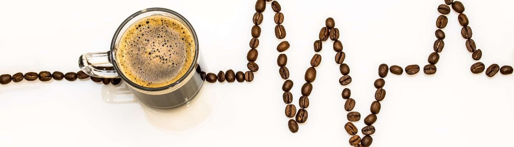

Prajim cu lemne
pentru un plus de savoare si aroma a cafelei
pentru un plus de savoare si aroma a cafelei
Cafea prajita traditional, cu lemne
De mai multi ani, aroma de cafea proaspat prajita de prajitoria de
cafea Retro Coffe Shop din Iasi a inceput sa invadeze strazile
orasului Iasi. In acest moment, am devenit un punct de referinta
pentru cunoscatorii de cafea din Romania si nu numai. In cadrul
atelierului nostru prajim cu multa atentie, in cantitati mici, o
selectie de boabe de cafea de specialitate din toata lumea. Oferim
peste 40 de cafele de origine si amestecuri ( Coffee Blends), avand
astfel o gama variata, pe gustul tuturor iubitorilor de cafea.
Suntem o afacere de familie, dedicata oferirii clientilor nostri unui nivel inalt de calitate, livrare rapida (in 24 ore in toata tara) si consultanta de specialitate. Consideram ca fiecare dintre noi trebuie sa se poata bucura zilnic de cea mai proaspata si mai buna cafea!
Suntem o afacere de familie, dedicata oferirii clientilor nostri unui nivel inalt de calitate, livrare rapida (in 24 ore in toata tara) si consultanta de specialitate. Consideram ca fiecare dintre noi trebuie sa se poata bucura zilnic de cea mai proaspata si mai buna cafea!

Beneficiile prajirii cafelei folosind arderea cu lemne
Un espresso perfect este rezultatul boabelor de cafea de cea mai
buna calitate, prajite cat mai corect posibil. Acesta este si
motivul pentru care am pornit in aceasta aventura, de a crea un
espresso diferit, care sa satisfaca gusturile cat mai multor
clienti. Toate echipamentele pentru prajirea cafelei au aceleasi
principii: prin folosirea caldurii, boabelor verzi li se modifica
proprietatile fizice si chimice, devenind astfel ceea ce vedem in
magazine.
Analizand proprietatile fizice ale boabelor de cafea, se observa cum culoarea acestora se transforma in diferite nuante de maro. Din punct de vedere chimic, acizii si componentele aromelor sunt fie create, fie echilibrate, fie modificate, intr-un mod care potenteaza aroma, aciditatea, post-gustul si corpul cafelei, asa cum doreste prajitorul. Diferenta esentiala intre prajirea cu lemne si cea conventionala (cu gaz sau electrica) consta in rapiditatea cu care temperatura boabelor de cafea creste. Inca de acum cateva secole, cafeaua a inceput sa fie prajita in cuptoare cu lemne.
Totusi, intre timp au aparut alte surse de caldura, cum ar fi gazul natural sau electricitatea, care au preluat stafeta si au inceput sa fie utilizate in principal pentru a accelera procesul de prajire si pentru a reduce costurile si nu neaparat pentru a imbunatati produsul final. Prin metoda noastra artizanala de prajire a cafelei cu lemne, dorim sa oferim clientilor nostri o cafea cu un gust distinctiv, foarte aromata si de cea mai buna calitate. In prezent, suntem (probabil) singura prajitorie de cafea la nivel national ce foloseste aceasta tehnica artizanala de prajire. Prin prajirea cu lemne avem un control asupra umiditatii, precum si o ardere mai puternica si mai curata.
Datorita controlului in timp real al arzatorului cu dubla combustie, dar si a sistemelor de evacuare, nu rezulta fum nociv in timpul procesului de prajire, drept urmare, calitatea boabelor de cafea nu este afectata. Prajitorul nostru Trabattoni Italnova 10 kg este construit in Italia (fabrica Trabattoni este printre putinele din lume ce construiesc prajitoare de cafea care functioneaza cu lemne). Metoda traditionala italiana folosita de maestrul Aldo Pezzilli se imbina perfect cu programul Artisan Roaster, ce ajuta la inregistrarea, analizarea si controlul profilelor de prajire a diferitelor sortimente de cafea. Asadar, prin controlul profilelor de prajire (inclusiv a temperaturii) in cadrul software-ului, putem garanta calitatea constanta a sortimentelor de cafea.
Caldura produsa de arderea lemnului are un continut mai mare de umiditate fata de cea produsa de gaz, fiind mai potrivita pentru prajirea mai lenta. Umiditatea din lemn protejeaza boabele in timpul prajirii, iar cu cat mai multe uleiuri sunt retinute in boabele de cafea, cu atat mai rafinata va fi aroma finala. In acelasi timp, prajirea lenta confera cafelei aciditate mai scazuta si corpolenta mai ridicata. Rezultatul este foarte vizibil in espresso, avand mai multa crema, aroma completa si echilibru. Chiar daca metoda de prajire folosita de noi este mai lenta, cafeaua nu este dusa pana in punctul in care sa ajunga “baked coffee” (cafea coapta). Asadar, noi, cei de la Retro Coffe Shop, va asiguram de faptul ca depunem permanent toate eforturile sa inovam si sa va oferim sortimente de cafea de cea mai buna calitate!
Analizand proprietatile fizice ale boabelor de cafea, se observa cum culoarea acestora se transforma in diferite nuante de maro. Din punct de vedere chimic, acizii si componentele aromelor sunt fie create, fie echilibrate, fie modificate, intr-un mod care potenteaza aroma, aciditatea, post-gustul si corpul cafelei, asa cum doreste prajitorul. Diferenta esentiala intre prajirea cu lemne si cea conventionala (cu gaz sau electrica) consta in rapiditatea cu care temperatura boabelor de cafea creste. Inca de acum cateva secole, cafeaua a inceput sa fie prajita in cuptoare cu lemne.
Totusi, intre timp au aparut alte surse de caldura, cum ar fi gazul natural sau electricitatea, care au preluat stafeta si au inceput sa fie utilizate in principal pentru a accelera procesul de prajire si pentru a reduce costurile si nu neaparat pentru a imbunatati produsul final. Prin metoda noastra artizanala de prajire a cafelei cu lemne, dorim sa oferim clientilor nostri o cafea cu un gust distinctiv, foarte aromata si de cea mai buna calitate. In prezent, suntem (probabil) singura prajitorie de cafea la nivel national ce foloseste aceasta tehnica artizanala de prajire. Prin prajirea cu lemne avem un control asupra umiditatii, precum si o ardere mai puternica si mai curata.
Datorita controlului in timp real al arzatorului cu dubla combustie, dar si a sistemelor de evacuare, nu rezulta fum nociv in timpul procesului de prajire, drept urmare, calitatea boabelor de cafea nu este afectata. Prajitorul nostru Trabattoni Italnova 10 kg este construit in Italia (fabrica Trabattoni este printre putinele din lume ce construiesc prajitoare de cafea care functioneaza cu lemne). Metoda traditionala italiana folosita de maestrul Aldo Pezzilli se imbina perfect cu programul Artisan Roaster, ce ajuta la inregistrarea, analizarea si controlul profilelor de prajire a diferitelor sortimente de cafea. Asadar, prin controlul profilelor de prajire (inclusiv a temperaturii) in cadrul software-ului, putem garanta calitatea constanta a sortimentelor de cafea.
Caldura produsa de arderea lemnului are un continut mai mare de umiditate fata de cea produsa de gaz, fiind mai potrivita pentru prajirea mai lenta. Umiditatea din lemn protejeaza boabele in timpul prajirii, iar cu cat mai multe uleiuri sunt retinute in boabele de cafea, cu atat mai rafinata va fi aroma finala. In acelasi timp, prajirea lenta confera cafelei aciditate mai scazuta si corpolenta mai ridicata. Rezultatul este foarte vizibil in espresso, avand mai multa crema, aroma completa si echilibru. Chiar daca metoda de prajire folosita de noi este mai lenta, cafeaua nu este dusa pana in punctul in care sa ajunga “baked coffee” (cafea coapta). Asadar, noi, cei de la Retro Coffe Shop, va asiguram de faptul ca depunem permanent toate eforturile sa inovam si sa va oferim sortimente de cafea de cea mai buna calitate!